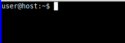
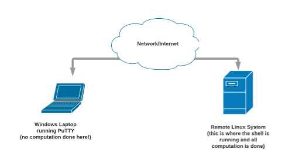
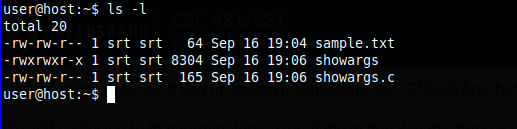

Knowing how to use Linux is a vital skill for anyone that works in technology, and is particularly important for people who work in security. Whether you are managing cloud resources and web servers or you are doing security testing, you will almost certainly be working with Linux systems. The command-line interface to Linux is an incredibly powerful tool once you learn how to use it, so taking the time to learn this will pay off many times over in the future. Linux is one of many operating systems that are derived from Unix, an operating system that dates back to 1971, and we generally refer to Linux, FreeBSD, and others as “Unix-like” operating systems.
Beyond the basic skills you gain from becoming fluent with Linux, working with the command line in Linux puts you closer to the level of the operating system and processes, and by working at this level you will develop a better understanding of what really goes on in a computer when programs are run. All popular operating systems (including Windows, Mac OS X, and even mobile operating systems like Android and iOS) have functionality and design rooted in Unix and Unix-like operating systems, and the basic concepts of processes, program arguments, and environment variables are the same in all these systems. Even if you never use an actual Linux system again, keep in mind that all these systems work the same underneath different surface appearances.
Let’s go ahead and get one thing out of the way: I am using “Linux” in a way that has become common, but is technically incorrect. “Linux” is technically just the operating system kernel, the program that manages system resources such as memory, disk, network interfaces, etc., and when you are actually interacting with a Linux system you are using a suite of programs and tools that are provided by others and are not part of the Linux kernel. The most common set of tools, which includes that bash shell that is a big part of this tutorial, is provided by the GNU project from the Free Software Foundation. The GNU folks would like for everyone to use the name “GNU/Linux” when talking about the Linux kernel combined with GNU tools, but this terminology is awkward and so it is not widely used. While I understand their desire for credit, if we insisted on putting every major contributor to a modern Linux-based system in its name, we’d end up calling it something like “GNU/X/Apache/LibreOffice/Mozilla/Linux” (or more!).
To add confusion to that terminology, a lot of the material in this tutorial really isn’t tied to Linux. For example, you can use the bash shell in OS X or in Cygwin under Windows or in the Windows Subsystem for Linux in Windows 10. While what we cover in this tutorial can be used directly in those environments, you are not actually using Linux in any of them. This tutorial was developed for the UNCG Principles of Computer Security class, and we will be using Linux systems, but don’t think that the information in this “Linux Tutorial” is only usable on Linux systems!
You are strongly encouraged to work along with this tutorial on a Linux system. And don’t just mindlessly go along typing commands you see here, but experiment and explore – be curious and follow your curiosity. UNCG students have access to several Linux systems that are managed either at the university level or specifically for the security class, but students these days often experiment on their own systems by running Linux within a virtual machine. I encourage you to do this! However, while setting up a virtual machine is not difficult, it is outside the scope of this tutorial. Students in the security class will be given instructions on how to do this separately, and will be given pre-configured virtual machines images to use for the class.
This tutorial is all about using Linux from the “command line interface,” or “CLI,” which is quite a different experience if you’re only used to interacting with computers with a graphical point-and-click style interface (a “graphical user interface,” or GUI). This means that you perform tasks by typing commands at a prompt, inside a terminal window that might look something like this:

The first part of that, which says “user@host:~” is the prompt, and the cursor is after that waiting for you to type a command. For example, you could type “ls” at the command prompt (followed by Enter) to get a listing of files. We’ll look at specific commands, including ls, later in this tutorial. The program that controls this interaction is called the “shell,” and there are many different shells you can use in Linux. This tutorial assume you’re using the bash shell (which stands for the “Bourne Again SHell” – a slightly geeky pun – you can look up the meaning if you’re curious, and you really should be curious!), but all the common shells work similarly. Note that shells are all highly configurable and customizable, and the prompt can be configured to say almost anything. The one shown above is a standard style for a Linux system, but don’t freak out if yours looks different!
The shell (providing the command prompt) can either come from a local Linux system that you are sitting at, or it can come from a Linux system anywhere in the world that you are connected to over the Internet. Now matter where the system is that you are working on, you will run a terminal program locally displays the results on your screen and sends your keyboard typing to the Linux system. If you are actually sitting at the Linux system you are working on, you just run a terminal program from the “Programs” or “Applications” menu, and you’ll get a prompt. If you are working on a system somewhere else (a “remote system”), the standard way to get a command prompt is to run a local terminal program that communicates over the network using the “secure shell” (SSH) protocol.
A common way for Windows users to access a remote Linux system is with the program PuTTY. PuTTY provides the terminal window, and a secure (encrypted) communication channel to the remote Linux system, which can be visualized like this:

Note that PuTTY is just a communication program, and doesn’t do anything else. It just takes characters it receives from the network and displays them in the terminal window, and sends characters that you type out to the network. In the old days, we would have called something that does this a “dumb terminal,” emphasizing the fact that it doesn’t really do anything. A common mistake students make when seeing PuTTY for the first time is to talk about “learning to use PuTTY” when they really are talking about learning Linux shell commands. When you type ls at the Linux command prompt to list files, that is a Linux command, executed by the remote system. PuTTY has absolutely nothing to do with that other than allowing you to type the characters ‘l’ and ‘s’ and displaying the results that come back. “Learning to use PuTTY” is a pretty meaningless statement in this context — what you should say is that you are “learning to use Linux” (or bash).
You can think of the command line as a bunch of words separated by spaces, where the first word is the “command” you want the system to perform and subsequence words are additional information to the command (this is a bit of an oversimplification, but it will be fine for our purposes). We will look at some of the most useful commands later, after we have dug into some details on how everything works, but for now let’s start with a few simple commands so we have something to use for examples.
Everyone who has used a computer is familiar with the notion of folders, which can hold files or other folders. The “folder” terminology comes from the graphical representation in a file browser, and the traditional term for this that predates the graphical user interface is a “directory.” Whenever you or a program interacts with the system, it has a “current directory” (or “current working directory”).
ls: lists the files in the current directory. If you type “ls -l” instead of just ls, you’ll get the long-form listing that shows file modification dates/times, file sizes, and other information. It will look something like this:

pwd: tells you…
cd: tells you…
Ways to get help. man and --help (not universal)
man: tells you…Notes
Commands are generally just the names of programs (cd is different!)
Say more on filesystems and structure?
Processes
Lets start refining the program/process picture above
Kinds of inputs:
-l with ls above)Kinds of outputs:
Draw refined picture
Where do the inputs come from, and what does a shell do (these are related!)
A few more details on processes